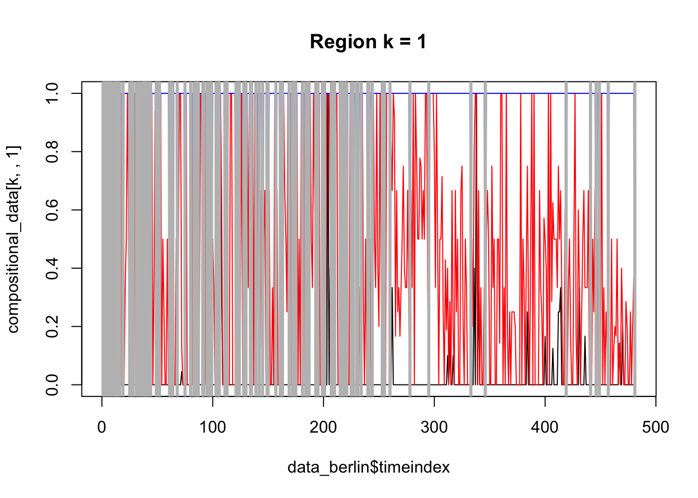
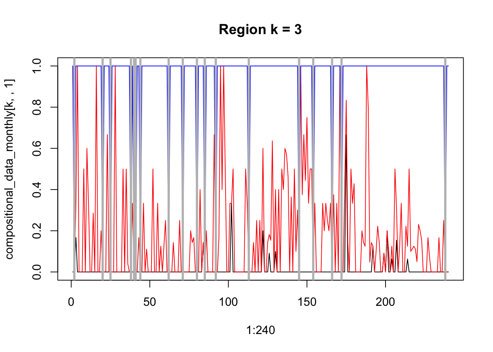
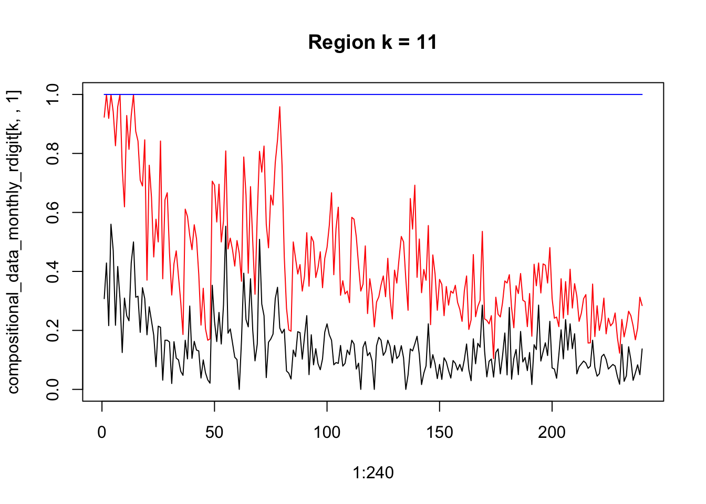
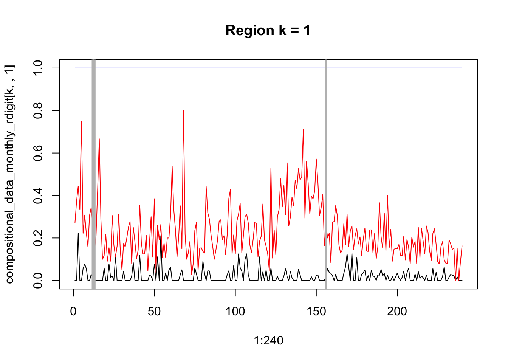

load("DATA_BERLIN.Rdata")
total_transactions <- data_berlin$cases$unbebaute_flaeche + data_berlin$cases$bebaute_flaeche + data_berlin$cases$eigentumswohnung
compositional_data <- array(, dim = c(length(data_berlin$spatial_index), length(data_berlin$timeindex), 3))
compositional_data[,,1] <- data_berlin$cases$unbebaute_flaeche / ifelse(total_transactions == 0, 1, total_transactions)
compositional_data[,,2] <- data_berlin$cases$bebaute_flaeche / ifelse(total_transactions == 0, 1, total_transactions)
compositional_data[,,3] <- data_berlin$cases$eigentumswohnung / ifelse(total_transactions == 0, 1, total_transactions)Compositional Areal Data
Compositional areal data
Real-world example
Berlin real-estate transactions in three categories
Bi-monthly data, each postcode region
k <- 1
plot(data_berlin$timeindex, compositional_data[k,,1], type = "l", ylim = c(0, 1), main = paste("Region k = ", k, sep = ""))
lines(data_berlin$timeindex, apply(compositional_data[k,,1:2], 1, sum), col = "red")
lines(data_berlin$timeindex, apply(compositional_data[k,,1:3], 1, sum), col = "blue")
abline(v = which(apply(compositional_data[k,,1:3], 1, sum) == 0), lwd = 3, col = "grey")
Aggregate to monthly data
total_transactions_monthly <- total_transactions[, which(data_berlin$day == 1)] + total_transactions[, which(data_berlin$day == 15)]
compositional_data_monthly <- array(, dim = c(length(data_berlin$spatial_index), (length(data_berlin$timeindex) - 1)/2, 3))
compositional_data_monthly[,,1] <- (data_berlin$cases$unbebaute_flaeche[, which(data_berlin$day == 1)] + data_berlin$cases$unbebaute_flaeche[, which(data_berlin$day == 15)]) / ifelse(total_transactions_monthly == 0, 1, total_transactions_monthly)
compositional_data_monthly[,,2] <- (data_berlin$cases$bebaute_flaeche[, which(data_berlin$day == 1)] + data_berlin$cases$bebaute_flaeche[, which(data_berlin$day == 15)]) / ifelse(total_transactions_monthly == 0, 1, total_transactions_monthly)
compositional_data_monthly[,,3] <- (data_berlin$cases$eigentumswohnung[, which(data_berlin$day == 1)] + data_berlin$cases$eigentumswohnung[, which(data_berlin$day == 15)]) / ifelse(total_transactions_monthly == 0, 1, total_transactions_monthly)k <- 3
plot(1:240, compositional_data_monthly[k,,1], type = "l", ylim = c(0, 1), main = paste("Region k = ", k, sep = ""))
lines(1:240, apply(compositional_data_monthly[k,,1:2], 1, sum), col = "red")
lines(1:240, apply(compositional_data_monthly[k,,1:3], 1, sum), col = "blue")
abline(v = which(apply(compositional_data_monthly[k,,1:3], 1, sum) == 0), lwd = 3, col = "grey")
Aggregate to 3-digit postcode regions
r_digits <- 3
aggregate_spatial_IDs <- floor(data_berlin$spatial_index/(10^(r_digits-1)))
total_transactions_monthly_rdigit <- t(sapply(unique(aggregate_spatial_IDs), function(x) apply(total_transactions_monthly[which(aggregate_spatial_IDs == x),, drop = FALSE], 2, sum)))
length(unique(aggregate_spatial_IDs))[1] 24compositional_data_monthly_rdigit <- array(, dim = c(length(unique(aggregate_spatial_IDs)), dim(compositional_data_monthly)[2], 3))
compositional_data_monthly_rdigit[,,1] <- t(sapply(unique(aggregate_spatial_IDs), function(x) apply((data_berlin$cases$unbebaute_flaeche[which(aggregate_spatial_IDs == x), which(data_berlin$day == 1), drop = FALSE] + data_berlin$cases$unbebaute_flaeche[which(aggregate_spatial_IDs == x), which(data_berlin$day == 15), drop = FALSE]), 2, sum))) / ifelse(total_transactions_monthly_rdigit == 0, 1, total_transactions_monthly_rdigit)
compositional_data_monthly_rdigit[,,2] <- t(sapply(unique(aggregate_spatial_IDs), function(x) apply((data_berlin$cases$bebaute_flaeche[which(aggregate_spatial_IDs == x), which(data_berlin$day == 1), drop = FALSE] + data_berlin$cases$bebaute_flaeche[which(aggregate_spatial_IDs == x), which(data_berlin$day == 15), drop = FALSE]), 2, sum))) / ifelse(total_transactions_monthly_rdigit == 0, 1, total_transactions_monthly_rdigit)
compositional_data_monthly_rdigit[,,3] <- t(sapply(unique(aggregate_spatial_IDs), function(x) apply((data_berlin$cases$eigentumswohnung[which(aggregate_spatial_IDs == x), which(data_berlin$day == 1), drop = FALSE] + data_berlin$cases$eigentumswohnung[which(aggregate_spatial_IDs == x), which(data_berlin$day == 15), drop = FALSE]), 2, sum))) / ifelse(total_transactions_monthly_rdigit == 0, 1, total_transactions_monthly_rdigit)k <- 11
plot(1:240, compositional_data_monthly_rdigit[k,,1], type = "l", ylim = c(0, 1), main = paste("Region k = ", k, sep = ""))
lines(1:240, apply(compositional_data_monthly_rdigit[k,,1:2], 1, sum), col = "red")
lines(1:240, apply(compositional_data_monthly_rdigit[k,,1:3], 1, sum), col = "blue")
abline(v = which(apply(compositional_data_monthly_rdigit[k,,1:3], 1, sum) == 0), lwd = 3, col = "grey")
k <- 1
plot(1:240, compositional_data_monthly_rdigit[k,,1], type = "l", ylim = c(0, 1), main = paste("Region k = ", k, sep = ""))
lines(1:240, apply(compositional_data_monthly_rdigit[k,,1:2], 1, sum), col = "red")
lines(1:240, apply(compositional_data_monthly_rdigit[k,,1:3], 1, sum), col = "blue")
for(k in 1:length(unique(aggregate_spatial_IDs))){
abline(v = which(apply(compositional_data_monthly_rdigit[k,,1:3], 1, sum) == 0), lwd = 3, col = "grey")
}
ILR Transformation
library("compositions")Welcome to compositions, a package for compositional data analysis.
Find an intro with "? compositions"
Attaching package: 'compositions'The following objects are masked from 'package:stats':
anova, cor, cov, dist, varThe following objects are masked from 'package:base':
%*%, norm, scale, scale.defaultdim(compositional_data_monthly_rdigit)[1] 24 240 3sum(is.na(compositional_data_monthly_rdigit))[1] 0sum(compositional_data_monthly_rdigit == 0)[1] 1469ilr_compositional_data_monthly_rdigit <- apply(compositional_data_monthly_rdigit, c(1,2), ilr)
sum(is.na(ilr_compositional_data_monthly_rdigit))[1] 0dim(ilr_compositional_data_monthly_rdigit)[1] 2 24 240QML
Functions needed for estimation
qml_spatiotemporal_compositions_p <- function(Y, W){
dimY <- dim(Y)
n <- dimY[1]
p <- dimY[2]
t <- dimY[3]
dimW <- dim(W)
if(dimW[1] != n | dimW[2] != n){
stop("Dimension of W is wrong")
}
vec <- function(x){
return(as.vector(x))
}
LogLikelihood <- function(pars, Y, W){
dimY <- dim(Y)
n <- dimY[1]
p <- dimY[2]
t <- dimY[3]
A_tilde <- matrix(rep(pars[1:p], n), n, p, byrow = TRUE)
Psi <- matrix(pars[(p+1):(p^2+p)], p, p)
Pi <- matrix(pars[(p^2+p+1):(2*p^2+p)], p, p)
sig_u <- pars[2*p^2+p + 1]
S <- diag(n*p) - t(Psi) %x% W
log_det_S <- determinant(S, logarithm = TRUE)$modulus
sum_eps_2 <- 0
for(i.t in 2:t){
vec_u_t <- S %*% vec(Y[,,i.t]) - vec(A_tilde) - (diag(p) %x% Y[,,i.t-1]) %*% vec(Pi)
sum_eps_2 <- sum_eps_2 + sum(vec_u_t^2)
}
LL <- -1/2 * log(2*pi) - ((t-1)*n * sig_u^2) / (2*p) + (t-1)/(n*p) * log_det_S - 1/(2*n*(t-1)*p*sig_u^2) * sum_eps_2
return((-1) * LL) # ((t-1)*n*p) *
}
residuals <- function(pars, Y, W){
dimY <- dim(Y)
n <- dimY[1]
p <- dimY[2]
t <- dimY[3]
A_tilde <- matrix(rep(pars[1:p], n), n, p, byrow = TRUE)
Psi <- matrix(pars[(p+1):(p^2+p)], p, p)
Pi <- matrix(pars[(p^2+p+1):(2*p^2+p)], p, p)
sig_u <- pars[2*p^2+p + 1]
S <- diag(n*p) - t(Psi) %x% W
log_det_S <- determinant(S, logarithm = TRUE)$modulus
U_t <- array(, dim = c(n*p, t))
for(i.t in 2:t){
vec_u_t <- S %*% vec(Y[,,i.t]) - vec(A_tilde) - (diag(p) %x% Y[,,i.t-1]) %*% vec(Pi)
U_t[,i.t] <- vec_u_t
}
return(U_t)
}
start_a <- rep(1, p)
start_Psi <- matrix(rep(0.2, p^2), p, p)
start_Pi <- matrix(rep(0.2, p^2), p, p)
start_pars <- c(start_a, vec(start_Psi), vec(start_Pi), 1)
LB_a <- rep(-1000, p)
LB_Psi <- matrix(rep(0, p^2), p, p)
LB_Pi <- matrix(rep(-1, p^2), p, p)
LB <- c(LB_a, vec(LB_Psi), vec(LB_Pi), 0)
UB_a <- rep(1000, p)
UB_Psi <- matrix(rep(1, p^2), p, p)
UB_Pi <- matrix(rep(1, p^2), p, p)
UB <- c(UB_a, vec(UB_Psi), vec(UB_Pi), 10000)
# LogLikelihood(start_pars, Y, W)
out <- solnp(start_pars, fun = LogLikelihood, Y = Y, W = W, control = list(trace = TRUE),
LB = LB, UB = UB)
res <- residuals(out$pars, Y = Y, W = W)
A_tilde_est <- matrix(rep(out$pars[1:p], n), n, p, byrow = TRUE) # - E_logsq_errors # (out$pars[1] - E_logsq_errors) * matrix(rep(1, n*p), n, p)
Psi_est <- matrix(out$pars[(p+1):(p^2+p)], p, p)
Pi_est <- matrix(out$pars[(p^2+p+1):(2*p^2+p)], p, p)
sigu_est <- out$pars[2*p^2+p + 1]
return(list(A_tilde_est = A_tilde_est, Psi_est = Psi_est, Pi_est = Pi_est, sigu_est = sigu_est, H = out$hessian, ll = out$values[length(out$values)], residuals = res))
}Estimation
library("Rsolnp")
dim(ilr_compositional_data_monthly_rdigit)[1] 2 24 240Y_ilr <- aperm(ilr_compositional_data_monthly_rdigit, c(2,1,3)) # change order of dimensions of array to use it in qml function
dim(Y_ilr)[1] 24 2 240W <- nb2mat(poly2nb(map), style = "W")
output_qml <- qml_spatiotemporal_compositions_p(Y_ilr, W) # needs n x p x t
Iter: 1 fn: 38.3848 Pars: 0.1220840164 0.2697704525 0.0219953022 0.1236713684 0.0000002261 0.0777218733 0.3933114528 -0.0045291474 -0.1342511818 0.7492386332 0.1142351566
Iter: 2 fn: 38.3848 Pars: 0.12208358041 0.26977048367 0.02199528216 0.12367175429 0.00000002637 0.07772190393 0.39331146313 -0.00452917985 -0.13425116745 0.74923863565 0.11423515916
solnp--> Completed in 2 iterationsoutput_qml$A_tilde_est[1,][1] 0.1220836 0.2697705ilrInv(output_qml$A_tilde_est[1,]) 1 2 3
"0.2698735" "0.3207319" "0.4093946"
attr(,"class")
[1] "acomp"output_qml$Psi_est [,1] [,2]
[1,] 0.02199528 2.63690e-08
[2,] 0.12367175 7.77219e-02ilrInv(diag(output_qml$Psi_est)) # ??? 1 2 3
"0.3175912" "0.3276254" "0.3547834"
attr(,"class")
[1] "acomp"ilrInv(output_qml$Psi_est[1,]) # ?? 1 2 3
"0.3281626" "0.3385309" "0.3333065"
attr(,"class")
[1] "acomp"ilrInv(output_qml$Psi_est[2,]) # ?? 1 2 3
"0.2948543" "0.3512083" "0.3539374"
attr(,"class")
[1] "acomp"ilrInv(output_qml$Psi_est[,1]) # ?? 1 2 3
"0.3111996" "0.3210319" "0.3677685"
attr(,"class")
[1] "acomp"ilrInv(output_qml$Psi_est[,2]) # ?? 1 2 3
"0.3225945" "0.3225945" "0.3548111"
attr(,"class")
[1] "acomp"output_qml$Pi_est [,1] [,2]
[1,] 0.39331146 -0.1342512
[2,] -0.00452918 0.7492386output_qml$sigu_est[1] 0.1142352